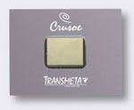
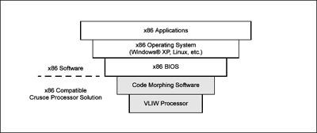

VLIW: Very Long Instruction WordTransmeta Crusoe |
||||
|

Transmeta's Crusoe line of processors is one of the first all-purpose VLIW architecture implementations to be launched. It was designed with mobile applications in mind, running at low temperatures and consuming little power--60 to 70% less than a comparable RISC chip, according to Transmeta. The Crusoe chips are not designed to run at the cutting edge of processor speed. Many of the processing functions that are implemented in hardware on a RISC chip are done instead in software. Crusoe's software layer, utilizing their Code Morphing technology, is rather extensive. The processor has been billed as a "hybrid software-hardware" CPU, due to the number of functions that have been shifted into the system software.

Crusoe's logical layers. (diagram from Transmeta) The choice of VLIW for the architecture allows Crusoe's software layer to be responsible for things that are usually accomplished in hardware: branch prediction, out-of-order execution (OOO), and x86 instruction translation. The first two are direct consequences of a VLIW-based architecture, and they provide a large bonus in terms of die-area. The Code Morphing software acts as a layer between the VLIW core and the operating system. It translates x86 instructions into native Crusoe instructions on the fly, and contains a dynamic compiler to find VLIW-friendly repetitive instructions. The processor itself is made fairly simple by the amount of software functionality. The software scheduling automatically slots data into a seven-stage integer pipeline and a ten-stage floating point pipeline. Like a traditional x86 processor, the processor contains a set-associative L1 cache and a write-back L2 cache. It also uses a x86-style translation look-aside buffer.
|
|
Navigation
|
||
| ||||